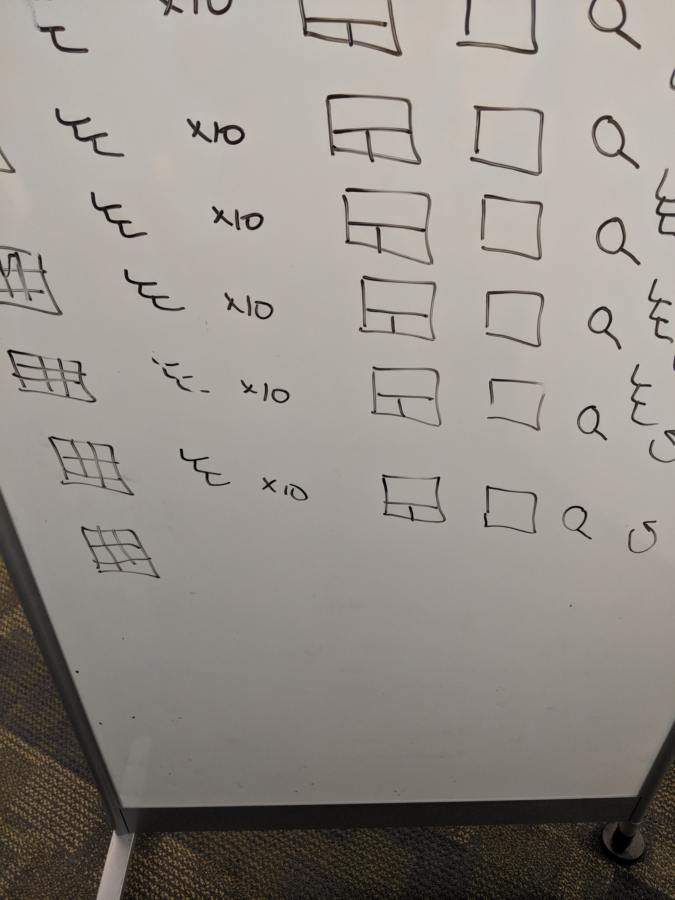
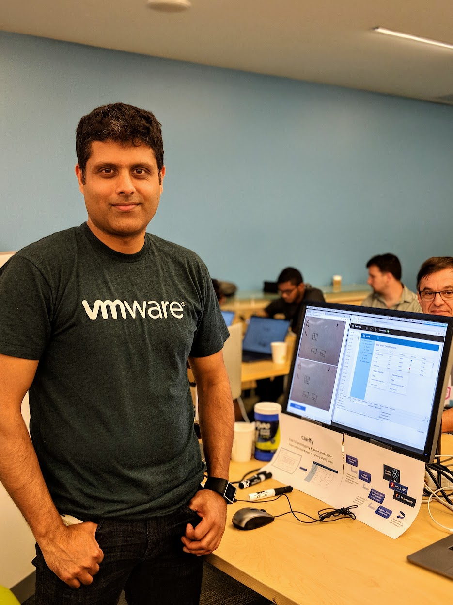

This hackathon-winning project was built at VMware during Borathon and went on to win 1st place across all global submissions. It was later inducted into the VMware CTO Office for its potential in transforming developer productivity. The project used machine learning to convert UI sketches into working front-end code.
- Problem: Developers often spend time manually converting wireframes or mockups into code. We aimed to automate that step using deep learning.
- Approach: Trained a convolutional neural network (CNN) using a dataset of labeled hand-drawn UI sketches and their corresponding code structures.
- Model: We applied image classification and localization techniques to detect UI components such as buttons, input fields, and containers.
- Pipeline: Our end-to-end system processed input sketches and produced structured UI code (e.g., HTML/CSS) on the fly.
- Outcome: Won 1st place across all VMware hackathon submissions. Inducted into the VMware CTO Office for further exploration. Featured internally as an innovative leap in developer productivity tooling.
Gallery
The image below shows one of the hand-drawn UI sketches we used as training data. Our model was trained to recognize patterns like buttons, text fields, and layout groupings from these examples.
Below is a snapshot taken during the hackathon where we demoed the end-to-end pipeline live in front of judges and peers.
Demo Video
This is a real demo from our VMware Borathon hackathon. The video shows a team member taking a picture of a hand-drawn UI sketch using their phone. The image is uploaded to our tool, which generates a URL. Visiting that URL renders a live, functional web app based on the original sketch — all generated automatically using our ML pipeline.